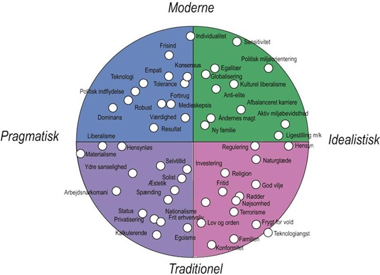

Dansk Noter
ETOS: troværdighed Man kan opbygge sin egen etos gennem fx uddannelse eller erfaring. Man kan også henvise til andre troværdige kilder, fx eksperter eller berømtheder. Man kan også nedbryde sin modstanders etos.
LOGOS: fakta Tal, statistik og videnskabelig fakta. Data skal både være sandfærdig og fremstilles sandfærdigt.
PATOS: følelser Kan appellere til alle følelser både positive og negative. Ordvalg: "vi" og "vores" eller "dem" og "deres". Anekdoter: personlig historie Billedsprog
Dansk Opgaver

https://www.youtube.com/watch?v=V2rwG9iwYNU: ROSA
Fokus på hygge, familie og den gammeldags produktion: Gode råvarer fra egen have, som koges til marmelade, der nydes med hele familien.
https://www.youtube.com/watch?v=o7N3UtqxIB0: VIOLET
Fokus på traditionelt mandige aktiviteter (at grille og bygge selv) samt at løse sine problemer og samtidig skabe værdi igennem ordentligt håndværk.
https://www.youtube.com/watch?v=4ygaLJBiYhc: BLÅ
Fokus på et dyr og eksklusivt produkt, der signalerer status samt råd og overskud til at købe et virkeligt kvalitetsprodukt.
https://www.youtube.com/watch?v=EV-eJ_0ItPU: GRØN
Fokus på økologi og fællesskab i en ramme, hvor teknologi (fx smartphones) og storby også inddrages.
Afsender er Irma, der generelt er en dyr butik.